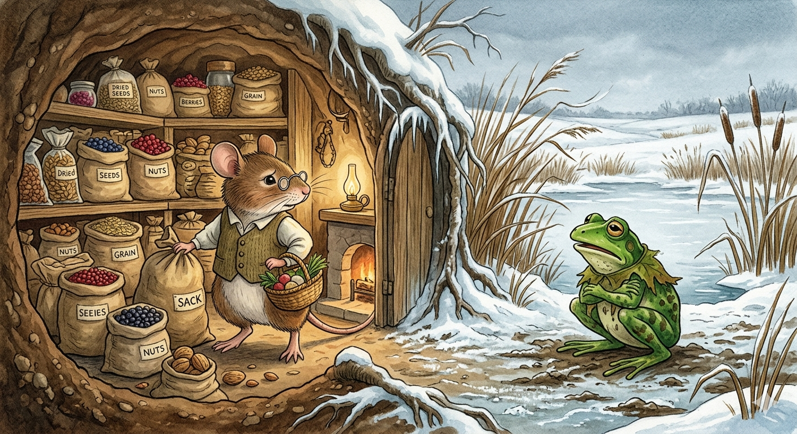

И.А. Дахкильгов. Хьехаме дувцарш - поучительные рассказы-притчи.
И.А. Дахкильгов. Хьехаме дувцарш - поучительные рассказы-притчи. Из ингушского фольклора.

Дахко пхьидага аьннар
БӀарччача ахкана пхьид Ӏам чу сакъердалуш, "варкъ" оалаш ягӀай. ХӀаьта дахка Ӏурденна сарралца къахьегаш, лахь гулдеш баьллаб. Ӏай мецъеннача пхьидо дехарах шозза-кхозза яхар-мо цунна пхьор денначул тӀехьагӀа, дахко аьннад: - Хьо дар дайна лийнай, со къахьегаш хьийзаб. Ер са кхача вай шиннена укх Ӏанна тоъаргбац. Йолле, дӀагӀо укхазара! Пхьид ушала чуяхай, кхы де хӀама доацаш.
РУССКИЙ
Мышка сказала лягушке
Все лето беззаботная лягушка только и делала, что квакала на все болото. А мышь все это время с утра до вечера трудилась, делала запасы на зиму. Зимою же лягушка стала попрошайничать у мышки. Та раза два накормила лягушку, а потом сказала так: "Ты все лето жила беззаботно, а я была в постоянных трудах и заботах. Моих запасов на всю зиму нам двоим не хватит. Иди своей дорогой!". Нечего было лягушке делать, и она нырнула в болото.
ENGLISH
The mouse said to the frog
All summer long, the carefree frog did nothing but croak across the whole marsh. Meanwhile, the mouse worked from morning till night, stocking up on provisions for the winter. Come winter, the frog began begging from the mouse. The mouse fed the frog a couple of times, and then said: "You spent the whole summer living carefree, whilst I was constantly busy and worried. My supplies won't be enough for both of us for the whole winter. Go on your way!" The frog had no choice but to dive back into the marsh.
НОХЧИЙН
Дахкас пхьидана аьлла
Дерриге аьхке, ойла йоцу пхьидо, бен хӀума ца дора, массо иӀаме Ӏаьхна, бен. Ткъа дахка хӀокху дерриге хена, Ӏуьйранна дуьйна сарралц, болх беш хилла, Ӏайна оьшу хӀума кечдеш. Ӏай пхьид дахкага деха доладелла. Цо шозза пхьид кхаьбна, тӀаккха аьлла: «Хьо дерриге аьхке ойла йоцуш вехаш хилла, ткъа со массо хана болхехь, ойланехь хилла. Сан кечдина хӀума шинна Ӏай тоьур яц. Хьайн некъа тӀе дол!». Пхьидана дан хӀумма а дацара, иӀаме чу чуиккхина иза.
ПОГОВОРКИ
Аьхки догӀах иддар Ӏай лайх иддав. Кто летом прятался от дождя, тот зимою убегал от снега. One who hid from summer rain fled from winter snow too. Аьхка догӀанах иддарг Ӏай лайх идда.Аьхки никъ баьчо Ӏай наб ергъя. Кто летом был в заботах, тот зимою отсыпался. One who kept busy in summer got to rest in winter. Аьхка некъ бинчо Ӏай наб йийра йу.Аьхки хьоа кхийхкачун Ӏай ей кхийхкаб. У кого летом голова варила, у того зимою в котле варилось. One whose head worked hard in summer had a full pot boiling in winter. Аьхка хӀоа кхихкинчун Ӏай яй кхихкина.Аьхки Ӏийне иллар, шийлача Ӏай жувра кад беха ихав. Летом отлеживавшийся в тени холодной зимою ходил просить чашку муки. One who lazed in the shade all summer went begging for a bowl of flour in the cold of winter. Аьхка ӀиндагӀехь Ӏиллинарг, шийлачу Ӏай ахьар кад беха ихна.БӀаьсте аьннар Ӏай хезад. (БӀаьсте аьнначоа гуйранна жоп хезад). Сказанное весною услышали осенью. (Сказанному весной ответ был дан осенью). What was said in spring was heard in autumn (the answer to a spring word came only in autumn). БӀаьста аьлларг Ӏай хезна.ДегӀар хургда, яхаш ваьгӀачун кхай тӀа йоархӀаш яьннай. Пока ленивый уповал на то, что суждено, его поле сорняками заросло. While the lazy man sat waiting for fate, his field grew over with weeds. ДоьгӀнарг хир ду, бохуш вехачун кхан тӀе йараш йойлла.Дешах даьре (дошо) хуларе къе нах хургбацар. Если бы слово могло превращаться в шелк (золото), бедных людей не было бы. If words could turn into silk (or gold), there would be no poor people left. Дешах дари (деши) хилхьар къен нах хир бацара.Картах букъа хьекхаш латтачул (хӀама ца деш латтачул) халхаваьлча тол. Уж лучше хотя бы станцевать, чем стоять без дела, подперев плетень. Better to dance than to stand idle, leaning your back against the fence. Кертах букъ хьоькхуш лаьттачул (хӀума ца деш лаьттачул) халхаваьлча тоьлу.Коа (беша) йоархӀаш яьннар хьунагӀа эстеш лехьаш лийнав. У кого сад зарос сорняком, тот в лесу кизил собирал. One whose garden grew over with weeds went to the forest to gather dogwood berries instead. Кевне (беша) йараш йаьлларг хьунах стеш лехьош лелла.Кхай тӀа хьай корта лелабар дикагӀа да хьона говра корта оллачул. Лучше свою голову держи в поле, чем у поля вешать лошадиный череп от сглаза. Better to keep your own head in the field than to hang a horse's skull there against the evil eye. Кха тӀехь хьайн корта лелабар диках ду хьуна говран корта уллучул.ПхьегӀий тӀара дикадар денадац. С сельских посиделок (бездельников) ничего путного никто не унес. Nothing good ever came out of a village gathering of idlers. Пхьоьхан тӀера дикадерг деъна дац.Ханнахьа ца даьр шозза де дийзад. Вовремя не сделанное пришлось делать дважды. What wasn't done in its proper time had to be done twice. Хеннахьа ца динарг шозза дан дезна.Яьсса кхестача хьайрах ялат хургдац, даьссача хабарах е хайра а е пайда а хургбац. Пустая (без зерна) мельница помола не дает, от пустых разговоров пользы не бывает. An empty mill grinds no flour; empty talk brings neither knowledge nor benefit. Йаьсса кхерстачу хьерах ялта хир дац, даьссачу хабарах йа хайр а йа пайда а хир бац.